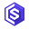

STAMscrollIntoView 사용 금지. STAM 환경에서 scrollIntoView는 예기치 않은 페이지 점프를 일으킬 수 있다. 대신 각 패널(mockup col, desc col)의 scrollTop을 직접 계산해 이동한다.
계산식: targetEl.offsetTop - panelEl.offsetTop - 40 (40 = 여유 padding). 결과가 0 미만이면 0으로 클램프한다.
애니메이션: panelEl.scrollTo({ top: value, behavior: 'smooth' }) 사용. smooth 스크롤이 지원되지 않는 환경에서는 panelEl.scrollTop = value fallback.
| 필드 | 레이블 | 필수 여부 | 비고 |
|---|---|---|---|
| 번호 | No. | 자동 | WF 블록 순서 자동 채번 |
| 항목명 | 컴포넌트명 | 필수 | Inspector 속성 탭 "컴포넌트명"과 동기화 |
| 설명 | 설명 | 필수 | Inspector 속성 탭 "설명"과 동기화 |
| 표시 조건 | 표시/권한 | 선택 | Inspector 표시/권한 탭 값 표시 |
| 액션 | 연결 화면 | 선택 | Inspector 액션/연결 탭 값 표시 |
| 데이터 | 데이터 출처 | 선택 | Inspector 데이터/검증 탭 값 표시 |
| 검증 규칙 | 검증 | 선택 | Inspector 데이터/검증 탭 검증 규칙 |
| 오류 메시지 | 오류 | 선택 | Inspector 데이터/검증 탭 오류 메시지 |
| 상태 | 상태 | 자동 | 필수 필드 입력 여부 기준 자동 계산: 완료/미작성 |
| 버튼 | 동작 | 상태 조건 |
|---|---|---|
| 닫기 / Editor로 돌아가기 | Preview 오버레이를 닫고 Editor Workbench로 복귀 | 항상 활성 |
| 임시저장 | 현재 상태를 임시저장 (필수 항목 미입력 허용) | 항상 활성 |
| 저장 | 정식 저장. 화면 ID·화면명 필수 확인 | 화면 ID, 화면명 입력 시 활성 |
| 저장 후 검토요청 | 저장 후 검토 상태로 전환. 필수 Description 미작성 시 경고 표시 후 진행 여부 확인 | 저장 가능 상태에서 활성 |
| 영역 | 다크 모드 | 라이트 모드 |
|---|---|---|
| Preview Header | --bg-sur (#1C2030) | --bg-sur = #FFFFFF + 하단 border |
| Mockup 프레임 | --bg-sur (#1C2030) | --bg-sur = #FFFFFF. 흰색 덩어리 방지 위해 1px border 필수 |
| Mockup 블록 | --bg-base (#13161D) | --bg-base = #F8FAFC. 카드 대비 확보 |
| 번호 마커 기본 | --bg-sur3 + --bd | --bg-sur2 + --bd-s |
| 번호 마커 활성 | --stam = #8B7FF8 | --stam = #5451E8 |
| Description 패널 | --bg-sur (#1C2030) | --bg-sur = #FFFFFF |
| 활성 Description 행 | rgba(84,81,232,.07) | rgba(84,81,232,.06) + left border --stam |
| 미작성 경고 텍스트 | --warn = #f59e0b | --warn = #854D0E (다크 대비 토큰 사용) |
| Preview Footer | --bg-sur + border-top | --bg-sur = #FFFFFF + border-top |
--bg-base (#F8FAFC)로 유지하고 각 패널에 --bd border를 반드시 적용한다.
이유. S21 계약은 본문 max-width: 1560px; padding: 0 32px을 요구한다. Preview View는 2열 레이아웃(mockup + description)이 뷰포트 전체를 사용해야 양쪽 패널에 충분한 공간이 확보된다. Editor Workbench와 동일한 예외 사유가 적용된다.
예외 범위. .prev-ui 및 그 하위 전체. Topbar와 STAM GNB Sidebar는 유지한다.
등록 표기 제안. LAYOUT_EXCEPTION: PREVIEW_REVIEW_SHEET — "화면설계서 Preview는 2열 Review Sheet 구조로 full-width를 사용한다."
| Selector | 역할 | 주요 속성 |
|---|---|---|
| .prev-ui | Preview 루트 컨테이너 | position:fixed; top:48px; inset:0 0 0 var(--sw); z-index:500; display:flex; flex-direction:column (Topbar 48px + Sidebar --sw 아래서 시작) |
| .prev-hdr | 메타 헤더 바 | height:48px; flex-shrink:0; display:flex; align-items:center; gap:10px; padding:0 20px; background:var(--bg-sur) |
| .prev-body-wrap | 2열 본문 컨테이너 | display:flex; flex:1; overflow:hidden |
| .prev-mock-col | 좌측 mockup 패널 | flex:0 0 52%; overflow-y:auto; padding:16px; border-right:1px solid var(--bd) |
| .prev-desc-col | 우측 Description 패널 | flex:1; overflow-y:auto; display:flex; flex-direction:column |
| .pmf-block | Mockup 블록 카드 | position:relative; padding-left:36px; cursor:pointer (번호 마커 절대 위치) |
| .pmf-block.lit | 선택된 블록 | border-color:var(--stam); background:rgba(84,81,232,.07) |
| .pmf-badge | 번호 마커 circle | position:absolute; left:9px; top:50%; transform:translateY(-50%); width:20px; height:20px; border-radius:50% |
| .desc-item | Description 항목 행 | padding:11px 14px; border-bottom:1px solid var(--bd); border-left:3px solid transparent; cursor:pointer |
| .desc-item.lit | 선택된 Description 행 | background:rgba(84,81,232,.07); border-left-color:var(--stam) |
| .prev-ftr | 하단 액션 바 | flex-shrink:0; display:flex; align-items:center; gap:7px; padding:10px 18px; background:var(--bg-sur); border-top:1px solid var(--bd) |
| .prev-missing | 필수 누락 경고 | display:flex; align-items:center; gap:5px; font-size:11px; color:var(--warn). JS로 show/hide. |
--bg-base)과 프레임(--bg-sur)의 계층 구분이 명확한지